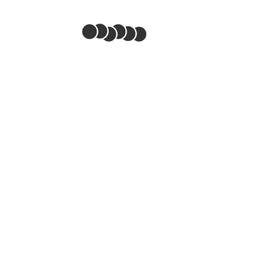

Zellatmung und Gärungen
Glykolyse

Abb. 1: C-Körperschema der Glykolyse
- Der C6-Körper Glucose wird über mehrere aktivierte Zwischenprodukte in zwei C3-Körper Glycerinaldehydphosphat (GAP) gespalten.
- Bei der Oxidation zu zwei weiteren Zwischenprodukt C3-Körpern werden zwei Moleküle NAD⁺ zu zwei Moleküle NADH₂⁺ reduziert.
- Bei der Umwandlung des Zwischenprodukts Phosphoenolpyruvat (PEP) in Brenztraubensäure (Pyruvat) werden zwei Moleküle ATP gewonnen.
Externe Links
Glykolyse